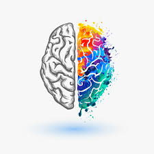

My Hobbies
Hobbies, Apr 1, 2019
I'm a big movie guy
I'll just put this out there, I'm a big movie guy. Love watching them, talking about them, reading about them. You name it, I'll partake. So much so, that I've even kept a running
Google Sheet of each movie I watch per year (for the first time), with a grade scale and what genre it's in. Over the years I've layered in more data, so now I can go back and run
reporting on movies I've seen and my taste over the years. I realized that this added layer would be considered nerdy by some, but for me it's a time capsule of what my year was like
or how I was feeling. It's something fun to share, as well, with friends looking for recommendations. I am trying to do this with all the media I consume, including books, TV, and video games.
I also love video games. Growing up, my dad and I would play Zelda until one of us had to fall asleep. Spoiler alert: I didn't sleep much as a kid. Now I'm 30 and things really haven't changed,
except for the sleeping thing. I still love the puzzle oriented games, but have developed a taste for FPS and these newfangled Battle Royale games (Apex Legends > Fortnite don't @ me). This is less enjoyable for my wife
but she's a good sport about it.
Finally, I'm trying to read 2 books a month as part of my 2019 intentions, which hasn't been going great. I love Stephen King books, and really all fiction, but I'm challenging myself to read
a self-help/business book each month as well. I think this is what's derailing me. I love sci-fi, horror, and fantasy - Harry Potter and IT being my favorite books ever. I tend to pick an author and read
as much as I can of their work. Haroun and the Sea of Stories, by Salman Rushdie, is one of those must-read, never heard of books that I will recommend to the unfortunate reader of my page.
Creative Outlets
Title description, Sep 2, 2017
While I'm a pretty process-oriented person, I do like to stretch my creative wings once in a while. I love to draw, or really doodle if I'm being specific,
and wish I did more of it. I like doing puzzles, too, which I think lends itself nicely to coding. I like to understand what the desired final product is and then working
backwards to make that happen.
Music is an outlet for me as well, letting me get lost in it while I work on things. I'm a huge Grateful Dead fan, which is what I'm likely listening to if you see me wearing my headphones
and in the zone. My friends and I started a vinyl club, where each month we are randomly assigned someone else and buy a record for them. There are not requirements as to the genre, no requests accepted,
and it makes for a cool project. I've since grown my collection considerably with music I'd have otherwise never considered or heard. For me, this is where my creative mind awakens. I love a challenge
but need to have the right setting to tackle it with my full effort.
About Me
It's hard to summarize myself in a short blurb, but I am a tech lover, video game aficianado, and eater of all foods. Recently married, I've been with my wife for nearly 10 years, though just shy of 1 year married. I am a dog fan (boo cats!) and cannot wait to have one of my own.
Some Killer Pictures


Follow Me
While I tend to not be very active on social media, I'm still worth the follow. See what I'm up to by following @klapmo on basically all platforms. I'm pretty great at branding and have the same user across (nearly) every platform.